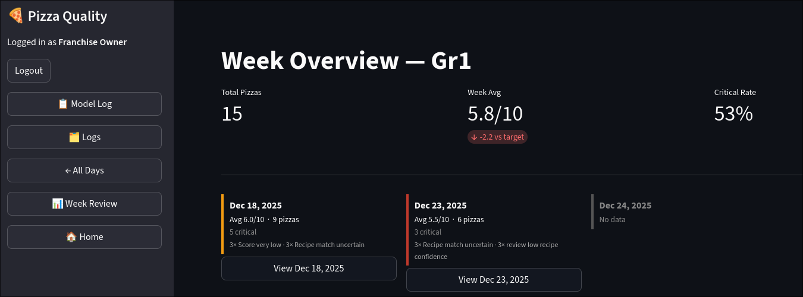
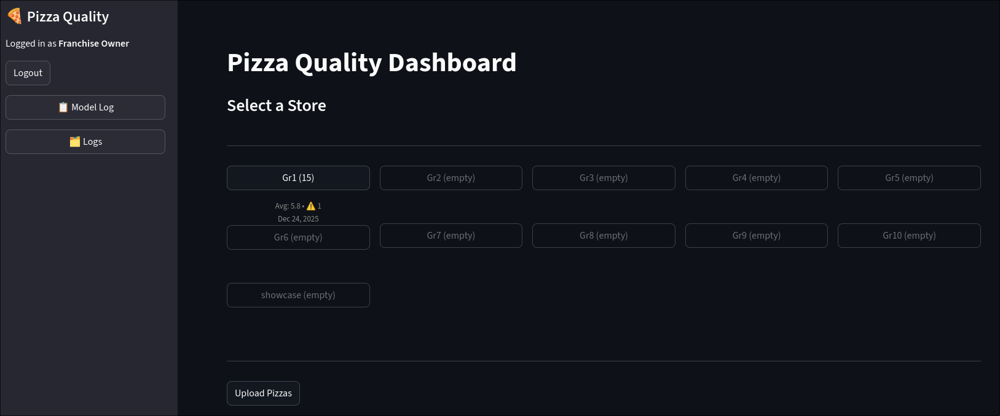
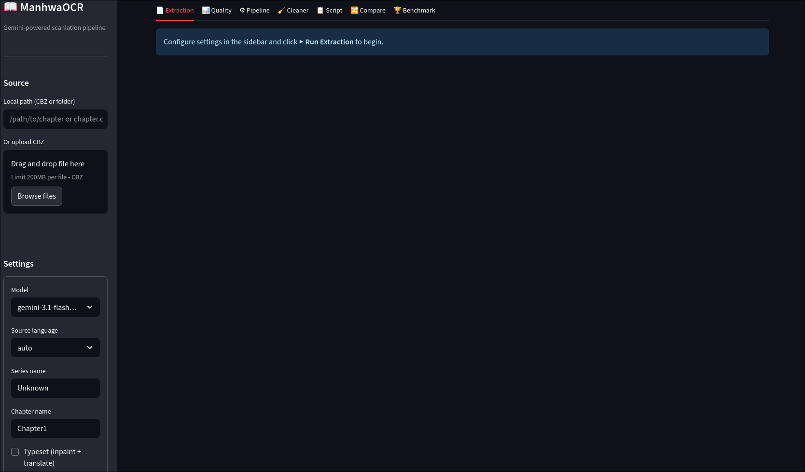
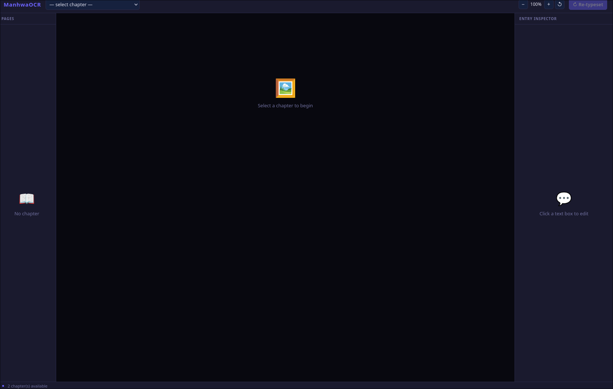

Machine learning and computer-vision engineer who takes systems all the way from model training to edge hardware, cloud infrastructure, and the dashboard on top. Over the past year I designed and deployed a YOLOv8 quality-control system running live across a food-service franchise, and built a multimodal Gemini LLM document pipeline from prompt design through benchmarking. Self-taught, fast, and comfortable owning the whole stack.
Computer-vision quality control deployed across a pizza franchise — built solo, end to end.


Dashboard shown with sample data.
Production-ready document pipeline: images → structured, translated, typeset output.

